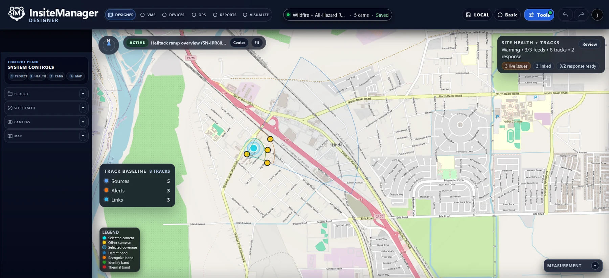

Insite Manager
From site planning to operational context.
InsiteManager brings security-system design, engineering review, device context and operational workflows together. Designer is our established planning workspace, while the connected operational modules continue to expand.
For system designers, integrators and engineering teams.
- Map and floorplan camera planning
- Engineering estimates, measurement and review
- Project-aware verification workflows
 View screenshot
View screenshot
A practical foundation for project design
Designer keeps camera placement, site geometry and engineering decisions in the same local project. A planning review can move between map and imported floorplan without losing the job context.
A planning review, step by step
- Lay out the sitePlace cameras on a map or imported floorplan and measure the site geometry.
- Examine coverageReview optical and thermal coverage, camera positions and target views in the same project.
- Prepare the handoffCheck bandwidth and bill-of-materials estimates and preserve local project context for a separate deployment review.
Example in practice: Compare camera positions and site measurements before reviewing preliminary engineering estimates. The result informs a design review, not installed-site acceptance.


View screenshotPlan the site. Carry the context forward.
Designer keeps map and floorplan planning, measurement, engineering estimates and project review together. The next connections bring source sessions, devices and operations into the same project context, with verification tied to each network and device.
Explore qualification milestonesEstablished in Designer
The v1.1.725 map-first planning foundation has documented browser acceptance across map, floorplan, engineering and review workflows.
Extending the workflow
RTSP preview, newer project-rail changes, VMS and Devices surfaces, and vendor-specific adapters are being developed or qualified. Broader field acceptance is not yet implied.
Online map tiles may depend on network access. Planning estimates and screenshots support design review; deployment and field acceptance are separate activities.